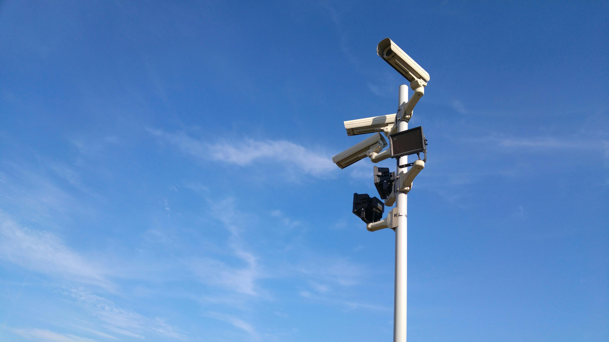

Uno degli ultimi libri che ho letto è 1984 di George Orwell, millenovecentoottantaquattro

Il romanzo di Orwell è ambientato in un mondo distopico
Ecco una citazione estratta dall'opera:
Chi controlla il passato controlla il futuro. Chi controlla il presente controlla il passato. – Capitolo III